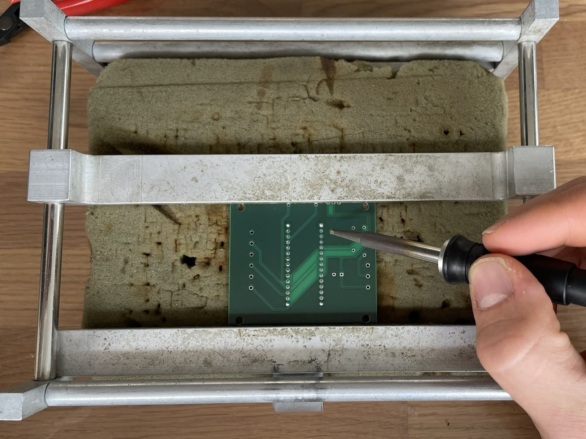
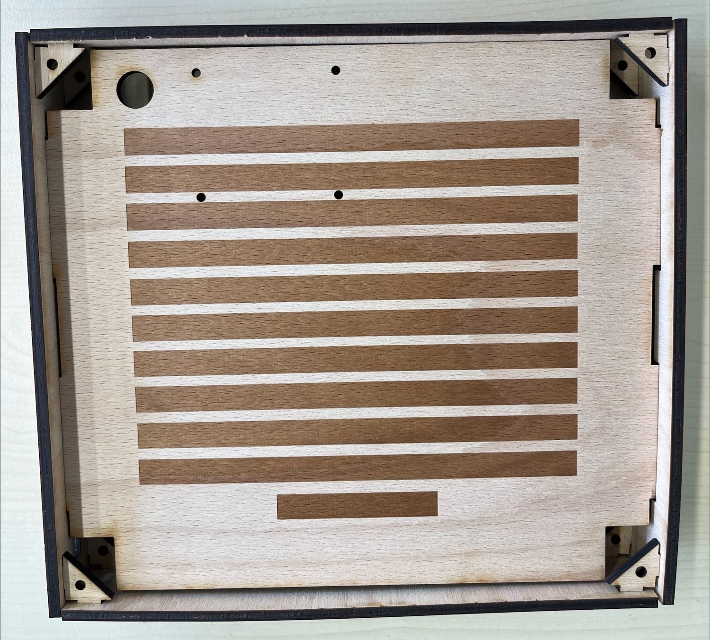

Aufbau
Insgesamt besteht das Gadget aus den folgenden Bauteilen:
- 3x Sperrholzplatte 5mm
- 1x MDF-Platte 3mm
- 1x Gravieracrylplatte, schwarz 2mm
- 1x DIN-A4 Transparentpapier
- 4x M3 Schraube kurz
- 4x M4 Schraube lang
- 4x Abstandshalter M3
- 8x Unterlegscheibe
- 4x M4 Mutter
- 4x M3 Mutter
- 1x Platine Wordclock
- 1x Arduino Nano ESP32
- 1x Leitungen 0,5mm^2 und 0,75mm^2
- 3x Taster
- 1x Fotowiderstand (Helligkeitssensor)
- 1x Widerstand 1kΩ
- 1x Widerstand 470Ω
- 1x Kondensator 1000uF und 6,3V
- 1x DHT11 Temperatur und Feuchtigkeitssensor
- 2x Buchsenleiste je 15 Pins
- 1x Schraubklemme 3 Pol
- 3x Schraubklemme 2 Pol
- 10x LED-Streifen mit 11 LEDs
- 1x LED-Streifen mit 4 LEDs
- 1x USB-C Kabel
Gehäuse
Die Komponenten für das Gehäuse müssen zunächst im Lasercutter ausgeschnitten werden. Eine Anleitung zur Bedienung des Lasercutters ist auf dem SPE Sharepoint hinterlegt: Innovationswerkstatt - Lasercut Guide. Die Dateien, welche Ausgeschnitten werden, können heruntergeladen werden: Lasercut-Dateien ZIP
Die Frontplatte wird einmal aus einer 3mm MDF-Platte ausgeschnitten und zusätzlich aus einer Gravierplastik Platte.
Die restlichen Teile werden mit 5mm Sperrholz ausgeschnitten. In VisiCut muss das richtige Material als auch die richtige Materialstärke ausgewählt werden, um ein gutes Schnittbild zu garantieren.
Die Dateien „Bodenplatte“ & „Frontplatte“ werden ausschließlich geschnitten und können somit im Modus „alles cut“ unter dem Reiter „Mapping“ geschnitten werden.
.png)
Die Seitenteile & Zwischenplatte werden im Modus „Nach einzelner Eigenschaft“ – „unterscheide nach Strichfarbe“ geschnitten. Bei „Rot“ muss das Profil „cut“ und bei „Alles andere“, „engrave“ ausgewählt werden.
.png)
Nachdem alle Teile ausgeschnitten sind, können die Seitenteile nun mit der Zwischenplatte zusammengebaut werden, indem die Zwischenplatte in die Schlitze der 2 Seitenteile gesteckt wird.
Achte darauf, dass die Aussparung für das USB-C Kabel unten liegt.
Nun können alle 8 Verbindungsdreiecke mit etwas Kraft auf die Enden der Seitenteile aufgesteckt werden.
Im letzten Schritt werden die Seitenteile für die Ober- und Unterseite des Gehäuses auf die Verbindungsdreiecke aufgesteckt. Wichtig: das Seitenteil mit den 3 Löchern und den Gravierungen ist das Oberteil! Wenn man von vorne auf die Platte schaut, sollten die 3 Löcher rechts sein.
Platine
Hinweise zum Löten
- Am besten wird vom kleinsten Bauteil zum größten Bauteil gelötet, damit kleinere Bauteile auch fest verlötet werden
- Temperatur des Lötkolbens 380°C-400°C
- Pins der Bauteile nach dem Aufstecken kürzen
- Auf der Platine ist jeweils an der entsprechenden Stelle der Umriss des Bauteils aufgedruckt
Der Arduino muss nun korrekt verdrahtet werden. Wichtig ist: der Arduino selbst wird nicht auf die Platine gelötet. Dafür sind die Buchsenleisten da, die man mit einem Seitenschneider auf die richtige Länge kürzt und dann auf die Platine lötet. (Der Arduino wird im Endeffekt auf die Buchsenleisten gesetzt.)
Zuerst werden die Buchsenleisten auf die korrekte Länge gekürzt und auf die Platine aufgesteckt und verlötet

Der Kondensator (zylindrisches Bauteil) wird links neben den Steckverbindern platziert. Hierbei muss unbedingt darauf geachtet werden, dass der „Minus Pin“ am Kondensator (der kürzere Pin am Bauteil) mit dem GND PIN der Platine verbunden ist (Ground Pins der Platine erkennt man an der „X Form“ des Durchgangsloch auf der Rückseite der Platine).
Der DHT11 Sensor (Bauteil mit „blauem Kasten“) wird auf der oberen Seite angebracht. Der DHT 11 Sensor muss „von der Platine weg zeigen“ und kann dann verlötet werden.
Die 3 zweipoligen Schraubklemmen können durch aufeinander schieben verbunden werden. Sie werden wie im Bild zu sehen auf der rechten Seite verlötet. Die dreipolige Schraubklemme wird entsprechend auf der linken Seite verlötet.
Der Fotowiderstand (Helligkeitssensor) wird direkt rechts daneben gelötet. Hier spielt die Polung keine Rolle. Wichtig ist nur, dass der Sensor „nach oben“ zeigt.
Die Widerstände können einfach, wie im Bild zu sehen, verlötet werden. Hierbei muss jedoch der 470 Ohm Widerstand ganz außen sitzen.
Der 1kOhm Widerstand wird daneben aufgesteckt und verlötet.
Achte darauf, dass die Anschlüsse für die Leitungen bei allen Schraubklemmen nach außen zeigen.
Achtung: Es ist wichtig, dass alle Bauteile auf der richtigen Seite der Platine verlötet werden. Auf der Platine ist jeweils an der entsprechenden Stelle der Umriss des Bauteils aufgedruckt.
LED-Matrix

Zunächst müssen die LED-Streifen auf die Zwischenplatte geklebt werden. Auf dieser sind bereits Markierungen mit dem Lasercutter eingraviert, um dies zu erleichtern.
Dabei muss man auf die Pfeilrichtung auf den Streifen achten, sodass die Pfeile in Richtung des Stromverlaufs zeigen.
Die Pfeile der obersten Reihe müssen von links nach rechts verlaufen. Die Pfeile der zweiten Reihe müssen dementsprechend von rechts nach links zeigen. Die Richtung der Pfeile wechselt sich also in jeder Reihe ab.
Um die LEDs zu verbinden, müssen zunächst die Kontakte verzinnt werden. Wenn alle Kontakte vorbereitet sind, müssen die Leitungen vorbereitet werden.
TIPP: Lege die Leitungen erstmal in schönen Bogen an die Kontakte, um auszumessen. Wenn eine passende Länge gefunden wurde, können die Leitungen für die restlichen LEDs vorgerichtet werden. Wenn die jeweiligen Leitungen für den „inneren“, „mittleren“ und „äußeren“ Bogen gleichlang sind, sieht es besser aus und spart Zeit.
Im nächsten Schritt müssen die Leitungen auf ca. 3-4mm abisoliert und ebenfalls verzinnt werden. Dadurch wird das Anlöten an den Kontakten erleichtert.

Anschließend können die Kontakte verlötet werden. ACHTUNG: Die Kontakte an den Schnittstellen müssen passend an die nächste Schnittstelle gelötet werden (+5V auf +5V; DO auf DiN; GND auf GND).
Hierbei kann sich an folgendem Bild orientiert werden:

Am Ende sollte die LED Matrix so aussehen:

Sobald alle LEDs gelötet sind, müssen noch 3 Leitungen an den Anfang der LED-Streifen gelötet werden und durch das Loch in der Zwischenplatte geführt werden.
Das Ende dieser Leitungen wird ebenso abisoliert, mit Aderenthülsen versehen und mit der Crimp Zange angepresst. Diese werden am Ende mit der Platine verbunden.
Abisolieren auf ca. 10mm
Aderenthülse aufstecken. Die Leitungsdrähte sollten mit der Aderenthülse abschließen und nicht weit darüber hinausstehen.
Mit der Crimpzange die Aderenthülse anpressen. Dabei sollte das Loch mit der Aufschrift "0,75" verwendet werden.

So sollte die Aderenthülse nach dem Crimpen aussehen.
Das andere Ende der Leitungen wird mit dem LED Band verlötet. Die Leitungen werden dann durch das Loch auf die Rückseite der Zwischenplatte geführt
Taster
Um die Taster mit der Platine zu verbinden, benötigen wir 2 Leitungen pro Taster, die auf eine passende Länge zugeschnitten werden. Danach kann bei beiden Seiten auf 3-4mm abisoliert werden.
Die Pins der Taster und die Enden der Leitungen werden nun mithilfe eines Lötkolbens verzinnt Anschließend können die Pins auch schon mit den Enden der Leitungen verbunden werden.

Das andere Ende der Leitungen wird ebenfalls abisoliert und mit passenden Aderenthülsen versehen.